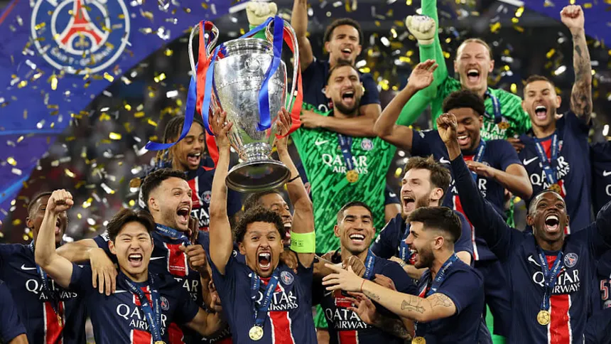

Qatar cobra ventaja como sede del Mundial de Clubes 2029 y el torneo se disputaría en invierno
Qatar emerge con fuerza como próxima sede del Mundial de Clubes de la FIFA de 2029. Si el país que ya acogió el Mundial de selecciones en 2022 es el elegido, el torneo disputaría su segunda edición en invierno. España y Brasil son las otras dos alternativas que la FIFA tiene encima de la mesa. Según diversas informaciones a las que ha tenido acceso este periódico, la figura del presidente qatarí del PSG Nasser Al-Khelaifi está siendo clave en el posicionamiento de Qatar. Al-Khelaifi lideró la negociación de las cantidades a percibir por participar en esta primera edición del millonario campeonato por los once clubes europeos pertenecientes a la Asociación Europea de Clubes (ECA) que él mismo preside. El Real Madrid, que abandonó la ECA por el conflicto de la Superliga, negoció por su cuenta.
La ECA ha desplazado a la UEFA a la hora de tratar con FIFA los pormenores económicos de la participación de los clubes europeos. El organismo que preside Alexander Ceferin siempre ha visto este nuevo Mundial de Clubes como un serio competidor de la Champions League en la búsqueda y obtención de ingresos procedentes de los derechos de retransmisión y de los patrocinadores. Según ha podido saber este periódico, un grupo mayoritario de los 32 participantes de esta primera edición han mostrado su deseo de que el Mundial de Clubes se dispute cada dos años por el pellizco económico que les ha supuesto.
El Fluminense por llegar a semifinales ha recaudado 60 millones de euros, lo que equivale a los ingresos que hubiera percibido en dos Copas Libertadores. Ahora mismo la posibilidad de que el Mundial recorte su frecuencia a dos años es inviable. La FIFA es consciente de que no cabe en el calendario y que, además, le supondría iniciar otra guerra abierta con la UEFA y también con la Asociación de Ligas Europeas.